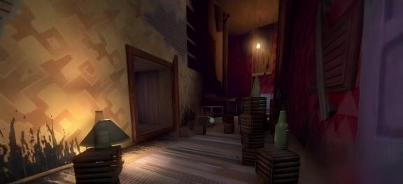
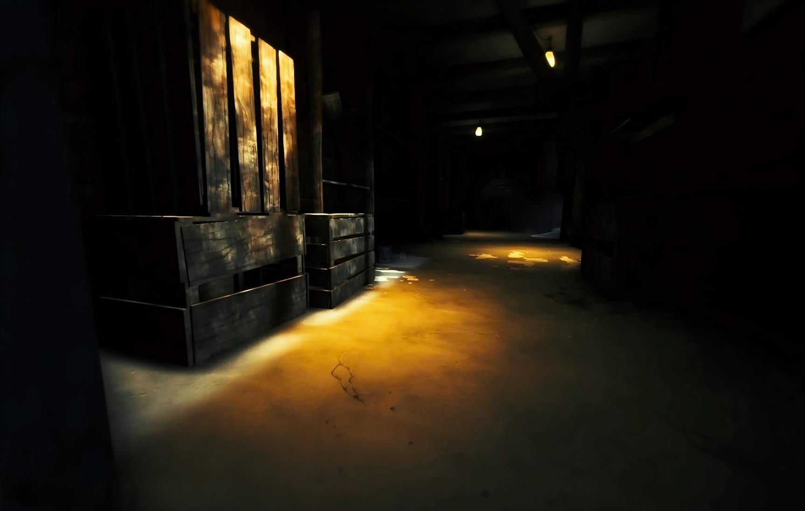
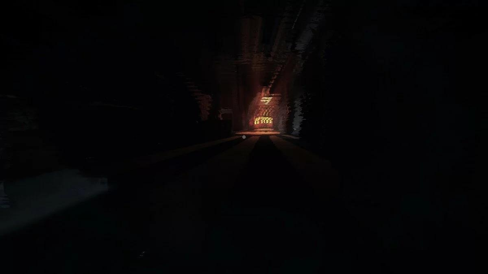

The Hallway
Entering the Hallway
The living room is behind you. Ahead: the hallway. It shouldn't be this long. You've walked through hallways before — they are passageways, connectors, transitional spaces between rooms where things actually happen. But this one stretches forward into darkness with no visible end, and the rules of architecture you understood as a two-year-old (and as the adult you are in real life) no longer seem to apply. The walls are too tall. The floorboards groan under your tiny weight as if something much heavier were walking in tandem with you, a half-step behind.
Chapter 4 is the game's hardest chapter, and it's not close. The shadow creature — that tall, slender shape you glimpsed at the edges of Teddy's light in Chapters 2 and 3 — is no longer a passive observer. It is actively hunting you through the length of this hallway. You cannot fight it. You cannot reason with it. You can only run, hide, and hope. This chapter will test everything you've learned about movement, hiding, and managing your fear. It's also one of the most unforgettable sequences in horror gaming. Let's get through it together.

What You're Up Against
Before you take a single step, understand the rules of engagement:
- The shadow creature has patrol routes. It doesn't teleport randomly. It moves along the hallway in patterns that you can learn and exploit. The first two minutes of this chapter are the most important — use them to observe the creature's movement rhythm before you start advancing.
- If it sees you, it will chase you. There is no warning phase, no "maybe it didn't notice." When the creature's attention locks onto the toddler, the audio shifts — a deep, resonant thrumming sound like a cello string being bowed too slowly — and it comes for you.
- You can survive a chase if you hide in time. The creature is faster than you in a straight line. You cannot outrun it over distance. Your survival depends on knowing where the nearest hiding spot is at all times and reaching it before the creature closes the gap.
- If the creature catches you… the screen goes black, a distorted sound plays, and you respawn at the last checkpoint. The game is not cruel — checkpoints are frequent, roughly every two to three "sections" of hallway. You will not lose more than 90 seconds of progress on any death. This is by design. Krillbite wants you scared, not frustrated.
The chase sequence in Chapter 4 is designed to make you panic. Your heart rate will spike. Your palms will sweat. Your instinct will scream at you to sprint blindly into the dark. That instinct is what gets you caught. The players who struggle most with this chapter are the ones who try to rush through it. Take it slow. Memorize the hiding spots. Wait for the creature to pass before moving. Patience is your real weapon here.
The Shadow Pursues
The hallway is divided into roughly five segments, each separated by a visual or architectural marker — a fallen picture frame, a section of collapsed wallpaper, a grandfather clock lying on its side. These markers are your navigation points. The creature patrols one to two segments at a time, moving from one end of its patrol zone to the other before turning around. Your job is to move when it's facing away and hide before it turns back.
Segment-by-Segment Walkthrough
Segment 1: The First Stretch (0–20 meters)
You start just outside the living room doorway. Ahead, the hallway extends roughly twenty meters before reaching a slight bend to the right. Along the left wall: a narrow console table with a shattered vase beside it. Along the right wall: a recessed doorway leading to a broom closet — your first hiding spot. The creature is not immediately visible when the chapter begins. Take this gift. Walk forward slowly, hugging the right wall, and mentally note the broom closet's position. When the creature manifests (it will appear at the far end of the hallway, at the bend, stepping out of the shadows as if formed from them), do not run. Step into the broom closet and wait. The creature will glide past, a tall dark smear against the already-dark walls, and continue toward the living room doorway. When it passes your hiding spot, count to five, then emerge and continue forward.
Segment 2: The Bend (20–35 meters)
Beyond the bend, the hallway narrows. This section is tighter, with fewer places to hide — and the creature's patrol cycle is shorter here. Your hiding spot is a large overturned armoire on the left side, roughly halfway between the bend and the next visual marker (a collapsed chandelier lying across the floor). The timing on this segment is tight: you have approximately 15 seconds between the creature's passes. Move immediately after it passes your position heading toward the living room. Walk, don't run — running makes noise that can attract the creature even outside its normal patrol pattern. Reach the armoire and crouch behind it.

Segment 3: The Chandelier Passage (35–50 meters)
The collapsed chandelier is impossible to miss — it lies diagonally across the hallway, crystals shattered and scattered like frozen teardrops across the floorboards. The creature cannot cross the chandelier. This is important. The chandelier acts as a barrier that the shadow will not pass, which means that once you're on the far side of it, the segment behind you is safe. Use this to your advantage. The hiding spot in this segment is beneath a long console table against the right wall — the tablecloth drapes to the floor, creating a perfect concealment space. Crawl under it and you're invisible.
Segment 4: The Portrait Gallery (50–70 meters)
The hallway opens into a wider section lined with crooked picture frames. The portraits are all wrong — the faces are smeared, the eyes are black voids, and some of the frames are empty, as if whoever was in the picture simply stepped out. The creature's patrol pattern changes here: it no longer moves linearly. It will stop, turn its head (or what passes for a head), and scan the gallery before continuing. This scanning behavior lasts approximately 8 seconds. When it scans, freeze. Do not move a muscle. The creature's vision is motion-based in this segment — if you're already hidden and still, it won't find you. Your hiding spot is behind a large fallen painting propped against the left wall. It's just wide enough to conceal a toddler.
Segment 5: The Final Approach (70–90 meters)
The last stretch of hallway before the locked door. The ceiling here has partially collapsed, and moonlight spills through the broken plaster in pale, cold beams. This is the most dangerous segment because the creature patrols it continuously — it doesn't leave this area to patrol earlier segments. Your final hiding spot is a large cardboard box near the right wall, just before the locked door. It's open on one side, facing the wall, creating a small cave. Crawl inside. The creature will pass close enough that you'll hear a sound like wet fabric dragging across wood. Stay still. When it moves toward the portrait gallery, that's your window — exit the box and sprint the final five meters to the door. There's a checkpoint right at the door, so even if you're caught on this final dash, you'll respawn at the box.
Play this chapter with headphones. The creature emits three distinct audio cues: a low thrumming when it's within 15 meters (danger close), a distant dragging sound when it's 15–30 meters away (safe to move), and silence when it has moved beyond 30 meters or entered a different segment. Learn to read these audio ranges and you can navigate the entire hallway without ever needing to visually confirm the creature's position — which is safer, because looking at it too long can trigger its attention.
All Hiding Spots — Mapped
For quick reference, here is every hiding spot in Chapter 4, listed in the order you'll encounter them. Memorize this list before you start the chapter, or keep it open on a second screen:
- Broom Closet — Segment 1, right wall. Recessed doorway, partially open. Stand against the back wall. Very safe — creature cannot see into the closet from the hallway.
- Overturned Armoire — Segment 2, left wall. Crouch behind it. Moderate safety — creature can see you if it passes on the left side, so position yourself toward the wall.
- Console Table — Segment 3, right wall. Crawl under the tablecloth. Very safe — creature does not check beneath furniture.
- Fallen Painting — Segment 4, left wall. Stand behind the painting. Moderate safety — creature may pause and "scan" near this location. Stay perfectly still during its scan.
- Cardboard Box — Segment 5, right wall. Crawl inside. Safe as long as you enter before the creature rounds the corner from Segment 4. The box is your final refuge before the door sprint.
Checkpoints are triggered automatically when you reach specific points. They are: (1) the bend at the end of Segment 1, (2) the far side of the chandelier in Segment 3, (3) the entrance to the portrait gallery in Segment 4, and (4) the cardboard box in Segment 5. If you're caught, you respawn at the last checkpoint you passed, not at the beginning of the chapter.
The Locked Door Puzzle
You've survived the hallway. The door at the end is massive — heavy oak, iron bands, a keyhole that glints in the moonlight. It's locked, of course. And the key is not conveniently sitting on a nearby table. The key is around the creature's neck.
Let that sink in. The key you need is physically attached to the entity that has been hunting you through the dark. The game isn't asking you to fight it — this isn't a combat encounter. It's asking you to be brave enough to get close.
How to Get the Key
- Wait for the creature to enter its scanning phase. In Segment 4 (the portrait gallery), the creature periodically stops to scan the area. During this scan, it stands still for approximately 8 seconds with its head turned away from the locked door.
- Approach from behind. When the creature is scanning, approach it slowly from behind. Do not run. The creature is sensitive to rapid movement during its scan. Walk — do not sprint — toward its back.
- Reach for the key. When you're close enough (roughly two toddler-lengths away), an interaction prompt will appear. This is the scariest button press in the game. Take the key. The creature will not notice immediately — you have a 3-second window after taking the key to back away and head toward the door.
- Retreat to the door. Once you have the key, turn and sprint to the locked door at the end of Segment 5. The creature will notice the key is missing after those 3 seconds and will pursue you with increased speed. You need to reach the door and interact with it before the creature catches up. The door unlock animation takes about 2 seconds. If you reached the door with even a small lead, you'll make it.
We strongly recommend completing a full patrol observation cycle before attempting to take the key. Walk the hallway once — learn the creature's timing, identify every hiding spot, and confirm the segment layouts. Then, on your second pass (or after a death that resets you to a checkpoint), go for the key. Knowledge is your only advantage. Rushing this sequence blind is the number one reason players get stuck on Chapter 4.
Navigating the Twisted Corridor
After you unlock the door and step through, the game shifts. The hallway behind you is gone — literally. If you turn around, there's only a wall. Ahead of you: a corridor that does not obey Euclidean geometry. The floor tilts. The walls curve inward. Doors appear on the ceiling. A staircase runs sideways along the left wall. This is the game's most surreal sequence — a spatial nightmare that reflects the toddler's fractured perception of reality.

Navigation Rules
- Follow the light. Throughout the twisted corridor, small amber lights — identical in color to Teddy's glow — appear at intervals along the correct path. These are the game's way of guiding you without breaking immersion. If you see an amber light ahead, walk toward it.
- Ignore the doors. The corridor is lined with doors — normal ones, upside-down ones, tiny ones a toddler couldn't fit through. None of them open. They are set dressing, manifestations of the game's theme of inaccessible memories. Don't waste time trying to interact with them.
- Gravity shifts, but you don't. At two points in the corridor, the "floor" becomes a wall and the "wall" becomes the floor. The toddler will automatically reorient — you don't need to jump or climb. Simply continue walking forward and the camera will adjust. It's disorienting by design. Trust that the game won't let you fall.
- The end is marked by a door with light underneath. After roughly two minutes of navigating the twisted space, you'll reach a normal-looking door with warm amber light spilling from beneath it. This is the exit. Interact with it to transition to Chapter 5.
The twisted corridor contains no enemies, no chase sequences, and no fail states. After the tension of the hallway chase, this section functions as a psychological decompression — strange and unsettling, but mechanically safe. Catch your breath. Chapter 5 is waiting.
The gravity shifts in the twisted corridor can trigger motion sickness in some players, particularly on larger screens. If you start feeling queasy, try the following: focus on Teddy (center-screen, the bear's glow provides a stable reference point), reduce your screen brightness slightly, and take the corridor at a walking pace rather than running. On PC, you can also increase the FOV in the settings menu — a wider field of view reduces the disorientation effect.
Hidden Collectible — Hallway Drawing
Chapter 4 has one hidden collectible drawing, and it is tucked away in a location that's easy to sprint past if you're still adrenaline-drunk from the chase sequence. The collectible is in the twisted corridor, not in the main hallway.
Location: Behind the Sideways Stairs
Roughly one minute into the twisted corridor, you'll encounter the sideways staircase — it runs horizontally along the left wall, ascending toward what was once the ceiling. At the base of these stairs (which, from your perspective, is at floor level to your left), there's a small alcove partially hidden by a torn piece of wallpaper. Crouch and enter the alcove.
Inside, the drawing is pinned to the back wall. The image is stark: a long, dark hallway rendered in heavy black crayon strokes, with a single small figure at one end and a tall, scribbled-over shape at the other. The perspective is unmistakably the toddler's — the hallway is vast, the dark shape is immense, and the small figure is tiny. Collecting it adds the drawing to your collection and brings you one step closer to the secret ending.
The alcove is subtle — it blends into the wall texture and the torn wallpaper partially obscures the entrance. As you walk through the twisted corridor, hug the left wall. When you reach the sideways stairs (you'll know them when you see them — they're impossible to miss), stop, face the base of the stairs, and look for the gap in the wallpaper. If Teddy's glow brightens slightly when you're near it, you're in the right spot. That's your proximity indicator.
Tips & Notes
Chapter 4 is the crucible. If you've made it through, the rest of the game — including Chapter 5 — will feel manageable by comparison. Here are the closing thoughts:
- This chapter separates players. Some people clear it in 20 minutes. Others take over an hour. Both are valid. The hallway chase is not a test of skill — it's a test of nerve. Take the time you need.
- The creature is not random. Every patrol route, every scanning behavior, every audio cue follows a predictable pattern. If you're struggling, spend a run simply observing. Don't try to progress. Just watch. When you understand the rhythm, the fear becomes manageable.
- Hug Teddy after you make it. This is not a gameplay tip. It's a human one. After the chase, after the key, after the twisted corridor — take a moment. Hold Teddy in-game. Let the amber glow steady you. The game's emotional arc mirrors your own. You've just been through something together.
- Chapter 5 is different. The forest is not about chases and hiding. It's about atmosphere, story resolution, and finding your mother. After the intensity of the hallway, the game gives you room to breathe. You've earned it.
Chapter 4 on mobile introduces some platform-specific considerations:
- Touch controls during chases: The virtual joystick responsiveness can feel slightly delayed during high-intensity moments on older devices (iPhone 11 and earlier, mid-range Android phones). If you're struggling with the final door sprint, try using the dedicated sprint button (located above the joystick on the right side of the screen) rather than pushing the joystick to its maximum — it provides a cleaner speed boost.
- Hiding spots on small screens: Some hiding spots (particularly the cardboard box in Segment 5) can be hard to spot on screens smaller than 6 inches. If you're unsure whether you're in the right location, look for a subtle white outline that appears around hiding spots on mobile — this is a platform-specific accessibility feature not present on PC/console.
- Battery and performance: The twisted corridor's dynamic gravity shifts and constantly changing camera angles are more demanding on mobile GPUs than any previous chapter. Expect slightly reduced frame rates (40–50fps) on Android mid-range devices. Close background apps before starting Chapter 4 to maximize performance.